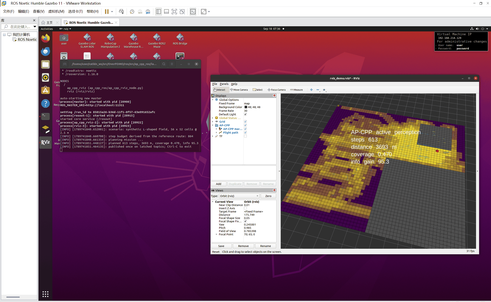
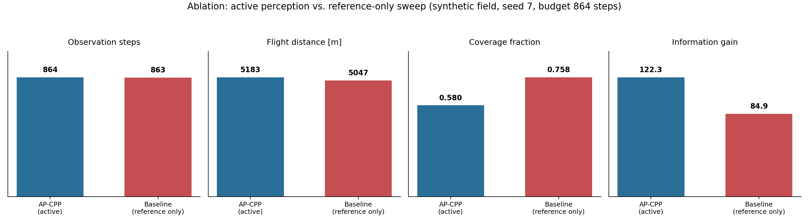

AP-CPP：主动感知覆盖路径规划
本模块把 OverFOMO 的自适应覆盖路径规划（Adaptive Coverage Path Planning）扩展为主动感知规划：不只是决定飞多快，还要决定该去哪里看。
完整工程源码在
src/air/ap_cpp_overfomo/， 包含核心规划源码、ROS 包ap_cpp_ros、演示脚本、测试与实验数据； 完整说明见该目录下的 README。 本页是面向课程文档的导读，细节以该 README 为准。
1. 要解决的问题
原论文的方法预先算好一条往复式（boustrophedon）航带，开环飞行，并根据图像语义调节地速：识别得越确定就越快，冠层越密或越模糊就越慢。
它回答的是「飞过这条航带时该飞多快」，但没有回答「这条航带是否值得消耗电量」。一块田里各个位置的信息价值并不相同——上一季的产量图、粗分辨率过飞得到的 NDVI 异常、农户报告的病害地块、上一次飞行留下的空洞，都会把不确定性集中到少数几个区域。一个不能偏离航线的机器人，会把续航花在已经看明白的地方，最后带着「唯一重要那块区域仍然没搞清」的地图返航。
AP-CPP 补上的就是这一个自由度。
2. 方法
规划器维护一个对作业区域的显式信念（占据栅格 + 逐格信息熵），并用滚动时域（receding horizon）对剩余航线反复重规划。每个候选动作的评分同时权衡航程代价和期望信息增益。
由此得到的规划器是构造性安全的：当农田中没有任何已知信息时，一个横向偏离惩罚项会把它牢牢压回原有的往复式航带，与已发表的结果逐点一致；只有当某处存在显著的信息热点时，它才会主动绕行。
| 组成 | 作用 |
|---|---|
ap_cpp/grid_model.py |
占据 + 熵信念栅格 |
ap_cpp/sensor.py |
传感器视场与观测模型 |
ap_cpp/utility.py |
航程代价 / 信息增益效用函数 |
ap_cpp/planner.py |
滚动时域规划器（核心算法） |
ap_cpp/control.py |
地速控制器 |
ap_cpp/mission.py |
任务循环与终止条件 |
ap_cpp/geo_bridge.py |
经纬度 ↔ 局部 NED 坐标转换 |
ap_cpp/airsim_driver.py |
AirSim 实飞驱动（可选） |
3. 运行效果
3.1 RViz 中的实时规划
规划器可以脱离 AirSim / Unreal 独立运行，直接发布 nav_msgs/Path 与 visualization_msgs/MarkerArray 供 RViz 显示。下图为 ROS 环境中的实际运行截图（roslaunch ap_cpp_ros rviz_demo.launch）：

覆盖航迹绘制为 nav_msgs/Path，信念栅格与信息热点绘制为 visualization_msgs/MarkerArray；地块几何取自本仓库的 CPP/002 定义。运行步骤见第 6 节。
3.2 消融对比
在相同地块与相同先验下，对比「主动感知」与「仅按参考航带飞」两种策略。下图左侧主动感知版本会主动离开航带以消除异常热点，随后重新并回参考航带；右侧基线则始终被约束在已发表的往复式航带上，从不偏离。
| AP-CPP（主动感知） | Reference-only 基线 |
|---|---|
 |
 |
| 主动离开航带以消除异常热点， 随后重新并回参考航带。 |
被约束在已发表的往复式航带上， 从不偏离。 |
消融曲线（信息增益 / 覆盖率随步数变化）：

4. 快速开始
4.1 环境要求
规划器与演示脚本只依赖 NumPy 与 Matplotlib，不需要 AirSim、不需要 TensorFlow、不需要 GDAL。
本节所有数值与图片在以下环境中实测产生：
| 项目 | 版本 |
|---|---|
| 操作系统 | Windows 11 |
| Python | 3.12.7（Anaconda base） |
| NumPy | 1.26.4 |
| Matplotlib | 3.9.2 |
代码不依赖这两个包的特定版本，较新的版本均可运行。
cd src/air/ap_cpp_overfomo
python -m pip install -r requirements-core.txt
src/air/ap_cpp_overfomo/requirements.txt是完整 OverFOMO 仿真流程（AirSim + 语义分割 + 正射影像）的依赖， 对应 Python 3.6 / 3.7（TensorFlow 1.15 的最高支持版本），在 Python 3.8 以上装不上。 其中的 GDAL 不在 PyPI 上以源码分发，需按自己的 Python 版本单独下载预编译 wheel 安装。 只跑本模块的规划器、演示与测试不需要这个文件。
4.2 运行演示（无需仿真器）
cd src/air/ap_cpp_overfomo
# 自带的合成地块（不依赖仓库数据）
python demos/run_ap_cpp_demo.py
# 使用仓库中的真实地块（Polygon002.geojson + 预生成 TurnWPs.txt 航线）
python demos/run_ap_cpp_demo.py --source geojson --field 002
# 同时运行消融基线，量化主动感知带来的收益
python demos/run_ap_cpp_demo.py --compare每次运行会输出一份 JSON 任务报告与一组四联诊断图（信念熵前后对比、累计覆盖率、地块上的规划航迹、任务收敛过程）。
4.3 运行测试
cd src/air/ap_cpp_overfomo
python -m pytest tests/ -q
# 或者
python -m unittest discover -s tests -v43 个测试全部通过，覆盖栅格化、信念融合、传感器几何、效用函数正向模型、A* 与航带重采样、速度律一致性、任务不变量以及 WGS84 往返转换。
4.4 真实地块的农学先验
演示支持注入任意 [0, 1] 风险图层（上一季产量图、NDVI 异常、巡田报告、上次飞行的空洞），通过 --prior 与 --prior-weight 控制：
python demos/run_ap_cpp_demo.py --source geojson --field 002 --prior anomaly --prior-weight 0.65. 复现说明与实测数据
本节数值由 demos/run_ap_cpp_demo.py --compare 在不依赖仿真器的 Python 环境下生成，与 src/air/ap_cpp_overfomo/results/ 中提交的图片一一对应。ROS 节点在 roslaunch 下运行时另有一组指标，两次运行不可混用。
合成地块（864 步，默认参数）
| 指标 | AP-CPP | 参考基线 |
|---|---|---|
| 飞行步数 | 864 | 864 |
| 重规划次数 | 432 | — |
| 飞行距离 | 5183.1 m | — |
| 平均地速 | 2.17 m/s | — |
| 平均信念熵 | 0.2084（初值 1.0000） | — |
| 覆盖率 | 0.5805 | — |
| 累计信息量 | 122.327 | — |
真实地块（CPP/002，--source geojson）
| 指标 | 数值 |
|---|---|
| 飞行距离 | 572.7 m |
| 平均地速 | 2.63 m/s |
| 平均信念熵 | 0.2143（初值 1.0000） |
| 覆盖率 | 0.5605 |
| 累计信息量 | 10.987 |
6. 在 RViz 中运行
src/air/ap_cpp_overfomo/ros/ 是一个 catkin 工作空间，内含一个包 ap_cpp_ros。节点无头运行规划器并把结果发布给 RViz，不需要 AirSim、Unreal，也不需要 TensorFlow / GDAL，只需要 source 过的 ROS 1 环境和 NumPy。
不要跳过这一节直接执行
roslaunch，会报错。ap_cpp_ros是 ROS 1 的 catkin 包， 必须先catkin_make编译并source devel/setup.bash，roslaunch才能找到它； 否则会提示找不到包或找不到 launch 文件。
6.1 先决条件：安装 ROS 1
本页截图运行在 Ubuntu 22.04（VMware 虚拟机）+ ROS Noetic（rosversion 1.16.0），
仓库检出在 /home/user/catkin_ws/src/OverFOMO。
Ubuntu 22.04 上 ROS Noetic 不是原生支持的——Noetic 只发布到 20.04（Focal），
在 22.04 上执行 sudo apt install ros-noetic-desktop-full 找不到候选包。按优先级有几种做法：
- 使用 20.04，或
ros:noetic容器（后者基于 20.04）。这是受支持的路径，不需要任何取巧手段，推荐。 - 改用 22.04 + ROS 2 Humble（Jammy 原生支持）。但本包是 ROS 1 的 catkin 工作空间，需要先移植，不能直接替换。
- 把 Focal 的 ROS 1 源加到 Jammy 上并做 apt pin。 实践中可行，但属于不受支持的混装：
sudo sh -c 'echo "deb http://packages.ros.org/ros/ubuntu focal main" \
> /etc/apt/sources.list.d/ros1-latest.list'
sudo apt install curl
curl -sSL https://raw.githubusercontent.com/ros/rosdistro/master/ros.asc \
| sudo apt-key add -
# 压低该源优先级，让 apt 在其它包上优先选 Jammy 自带的版本。
sudo tee /etc/apt/preferences.d/ros1-pin >/dev/null <<'EOF'
Package: *
Pin: release n=focal
Pin-Priority: 1
EOF
sudo apt update
sudo apt install ros-noetic-desktop-full python3-numpy
source /opt/ros/noetic/setup.bashpin 不是可选项：不加 pin，Focal 源会让 apt 在 Jammy 机器上考虑无关系统库的 Focal 版本。压到优先级 1 之后，apt 只会到 Focal 取 Jammy 完全没有提供的包名，也就是 ros-noetic-* 这一组。
6.2 编译并 source 工作空间
在 source 过 ROS 环境的终端中，从仓库根目录出发，依次执行：
# 1. source ROS 1
source /opt/ros/noetic/setup.bash
# 2. 进入本模块的 catkin 工作空间
cd src/air/ap_cpp_overfomo/ros
# 3. 编译
catkin_make
# 4. source 编译产物（每开一个新终端都要做一次）
source devel/setup.bash节点是纯 Python 的，catkin_make 只是把脚本装到 catkin 的 bin 路径并注册这个包，不会真正编译代码。但第 4 步必须执行，否则 roslaunch 会报找不到包。
6.3 启动
roslaunch ap_cpp_ros rviz_demo.launch # AP-CPP
roslaunch ap_cpp_ros rviz_demo.launch reference_only:=true # 消融（仅参考航带）
roslaunch ap_cpp_ros rviz_demo.launch source:=geojson field:=002 # 真实地块
roslaunch ap_cpp_ros rviz_demo.launch rviz:=false # 只跑节点，不开 RViz也可以直接运行节点、自行启动 RViz：
rosrun ap_cpp_ros ap_cpp_rviz_node.py --source geojson --field 002
rviz -d $(rospack find ap_cpp_ros)/config/rviz_demo.rviz发布的话题：
| 话题 | 类型 | 内容 |
|---|---|---|
/ap_cpp_rviz/path |
nav_msgs/Path |
实际飞行的观测航迹 |
/ap_cpp_rviz/markers |
visualization_msgs/MarkerArray |
覆盖栅格、障碍物、参考航带、端点、汇总标签 |
把仓库搬进虚拟机。 ROS 那台机器只需要仓库本身——
ap_cpp/、CPP/和ros/。 这条路径不会 importairsim，不需要装 AirSim。
7. 关于大体积数据文件
仓库约定「尽量保存文本文件，大体积数据通过永久网盘链接提供」，因此以下文件未纳入版本库，需要时请按下方说明获取并放置：
| 文件 | 大小 | 用途 |
|---|---|---|
weights0500.hdf5 |
51 MB | OverFOMO 原始语义分割模型权重，供 main.py 配套流程使用 |
CPP/00{0..4}/viewpoints_map.jpg |
共 52 MB | 原始 OverFOMO 流程生成的可视化底图，仅 plot_vwps_on_field.py 使用 |
gif/demo.gif |
10 MB | 上游仓库的演示动图（本模块文档未引用） |
AP_CPP_Assignment_Submission.zip |
9 MB | 最终作业提交包（内容与本节目录高度重复） |
获取方式：完整大体积权重与数据集可联系作者获取，或见 Release 附件。
放置方式：weights0500.hdf5、gif/demo.gif 与 AP_CPP_Assignment_Submission.zip 放在 src/air/ap_cpp_overfomo/ 根目录下（动图放回 gif/ 子目录）；viewpoints_map.jpg 分别放回 CPP/000/ 至 CPP/004/。
本模块的核心部分（ap_cpp/ 规划源码、演示、测试与 ROS 包）不依赖上述任何文件，可直接运行，见第 4 节与第 6 节。
8. 参考文献
关于 OverFOMO 的原始方法与引用格式，见 src/air/ap_cpp_overfomo/README.md 的引用一节。
人工智能使用声明
本模块的代码与文档编写过程中使用了大型语言模型进行辅助（代码整理、文档撰写与英文翻译）。作者已对提交的全部内容进行复核，并对其正确性负责。